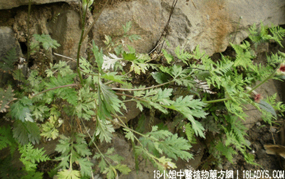

(本文解释权归中药材天地网兄弟站-18小姐中医植物药方网所有,如需转载请注明出处)
大金不换(中药材植物名:金不换)(植物科目:远志科)

别名：紫背金牛、大兰草、大金牛草、大金。
植物名：金不换。
生长环境：本品为一年生，直立或平旷草本。生于荒坡、丘陵、或旷野、阳光充足的地方，性耐旱，不论土质肥瘠，都能适应生长。
分布：本省各地及南方各省均有分布。
入药部分：全草。
采集期：夏、秋。
自采地点：山岗。
性味：性平、味甘淡。
功能：散瘀、止咳。
主治、用量和用法：1、伤症咳血：干用5钱至1猪瘦肉适量，煎服；2、苦伤胸痛：用法同上；3、皮肤生蛇：用法同上。
验方1：（治苦伤胸翳方）大金不换5钱、入地金牛5钱、金钮头根5钱、川破石5钱、铁包金5钱、清水四碗，煎成一碗服。
（方解）大金不换散瘀止咳；川破石清热散瘀；入地金牛开胸化气散瘀：铁色金疗苦伤、咳嗽、吐血；金钮头清热散瘀，合为清热、止咳、行气、开胸、散瘀之剂，治苦伤效果良好。
（方歌）：苦伤胸翳嗽频，大金不换钮头根，入地包金川破石，疗伤开翳此方珍。
验方2：（治皮肤痕痒生蛇方）大金、细金、独脚鸟扣、山白。用法：干花5钱至1两，猪瘦肉适量，煎服。
参考资料：《广东中医》（1959.9）介绍：红缨树根2两、甘草3钱、水适量，煎服，或加猪瘦肉，治肺结核，咯血，以为远胜于三七及血见愁等。
又：佛山民间斗红菱为龙船花，与本品不同，用时宜鉴别。
(本文解释权归中药材天地网兄弟站-18小姐中医植物药方网所有,如需转载请注明出处)